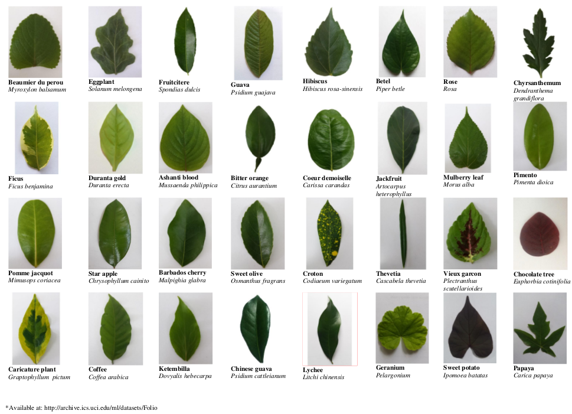
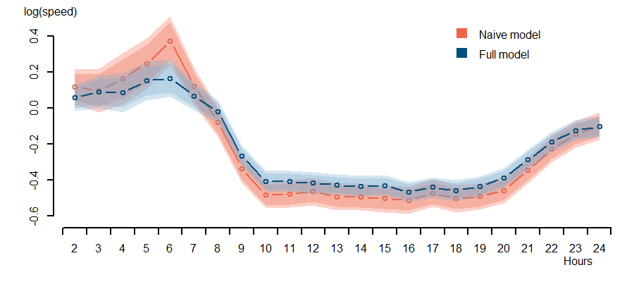

An Exploration with Folio Data Set
The UCI data repository contains a Folio Data Set that consists of pictures of tree leaves. Size of the data set stands at 1GB. We attempted to build a classifier for the leaves based solely on the image data. The classifier achieved 90% accuracy with simple methods like PCA (with some twists) and KNN, better than the paper in which the data was originally presented.

Convolutional Neural Networks should easily this accuracy. Then again the total length of the code that runs this classifier is less than 100 lines, and runs in a matter of seconds (apart from IO, which really depends on your hard drive). I imagine CNN will take a lot longer.
Follow this link to the project presentation.
An Exploration with New York Taxi Data Set
The NYC Open Data program is publishing data sets from the city government "as part of an initiative to improve the accessibility, transparency, and accountability".
I looked at the yellow cab data collected in the month of December 2015. The data set consists of over 11 million entries of trip records, roughly 1.7GB in disk volume.
This data set contains information on the millions of trips taken by New York City’s taxis on an annual basis. Records include pick-up and drop-off dates/times, pick-up and drop-off locations, trip distances, itemized fares, rate types, payment types, and driver-reported passenger counts.
Some exploratory analysis seem to suggest that vehicle speed of the taxis is faster during rush hours, defying the "common sense" that one should avoid the morning rush because streets are packed and cars move slower.
There is, however, counfounding in the co-variates: pick-up/drop-off combination of trips vary over time. Long distance trips, including trips to the airports, tends to take place in the morning, inflating the average speed. It is not immediately clear if traveling in the morning is actually faster.
Someone skeptical as statisticians starts to question the validity of the above finding. Alternative explanations abound. Could the Simpson's paradox be at play? An attempt was made to quantify the trip speed patterns over time using regression models, adjusting for trip routes.
As it turns out, there are no obvious increase in your travelling speed in the early morning, as suggested by some naive analysis. There seem to be no slow-downs either: it is just slow throughout the day.

General lessons learned here:
Preprocessing and data cleaning can be a little challenging, and time-consuming, even for a well-oraganized data set like this.
The ability to process large data sets is important. Next time I will use Spark.
The actual statistical part is relatively easy, once the right (interesting) question is identified. What can or cannot be answered is just as important as how they are answered, if not more so. In that I completely agree with John Tucky.
Follow this link to the project report.